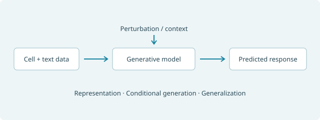
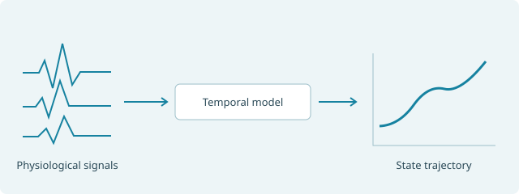
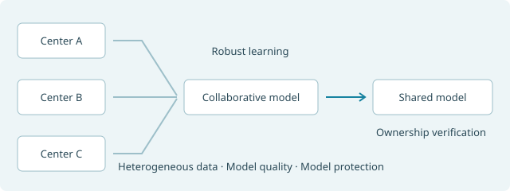
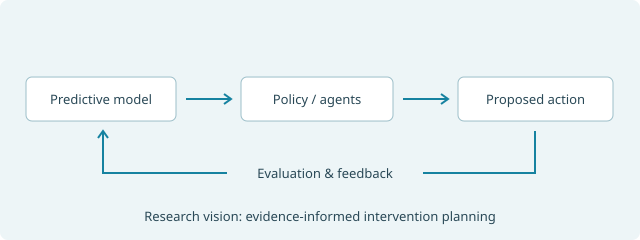

RESEARCH AGENDA
From system models to informed interventions
Developing AI methods for life sciences and healthcare through generative modeling, multimodal learning, and trustworthy collaboration.
A shared research question
What can we learn about a system—and how can that knowledge guide what happens next?
Represent
Multimodal observations
Predict
Dynamics & interventions
Decide
Actions & evidence
A framework for the research agenda; collaborative learning addresses the multi-center settings within it.
Generative models & virtual cells
How can models predict cellular responses beyond the contexts they have observed?
Cells provide a setting for studying representation learning and conditional generation in heterogeneous biological systems. My research connects single-cell data and biological knowledge to models of cellular states and responses.

Representations
Align single-cell measurements with text and prior biological knowledge.
Response prediction
Study conditional generation and generalization across cellular contexts.
Biological questions
Explore cell communication and target prioritization.
Physiological dynamics & digital biomarkers
How can heterogeneous observations reveal changing physiological states?
Physiological signals and wearable measurements connect temporal learning to disease assessment. I study how models can capture dynamic patterns across modalities, individuals, and observation scales.

Temporal structure
Learn multiscale patterns and interactions among physiological variables.
Disease assessment
Develop digital biomarkers for disease detection and progression assessment.
Clinical modeling
Study interpretable risk prediction from physiological measurements.
Trustworthy collaborative learning
How can institutions learn together while preserving model quality and ownership?
Multi-center collaboration creates distinct challenges in data quality, statistical heterogeneity, and model sharing. This strand studies the foundations of robust collaborative training and model ownership verification.

Robust training
Learn from clients with heterogeneous label noise.
Model protection
Study watermarking and ownership verification in federated models.
Collaborative applications
Investigate federated digital biomarkers for disease assessment.
Decision learning & scientific agents
How can predictions inform actions that can be evaluated against evidence?
Building on predictive modeling, I am exploring reinforcement learning and multi-agent collaboration for intervention planning and scientific discovery. The emphasis is on evaluating proposed actions and retaining the evidence behind them.

Policy learning
Explore offline reinforcement learning for sequential intervention planning.
Evidence & reasoning
Study tool use, process supervision, and evidence coordination.
Scientific workflows
Explore hypothesis analysis and experiment planning with AI agents.
Related work
LLM-enhanced reports for clinicians · BIBM 2025LONG-TERM VISION
Learning through prediction, action, and feedback
I aim to connect computational models with experimental and clinical evidence: from target prioritization and intervention hypotheses to evaluation and model refinement. Dry–wet lab integration and automated experimentation are longer-term research goals.